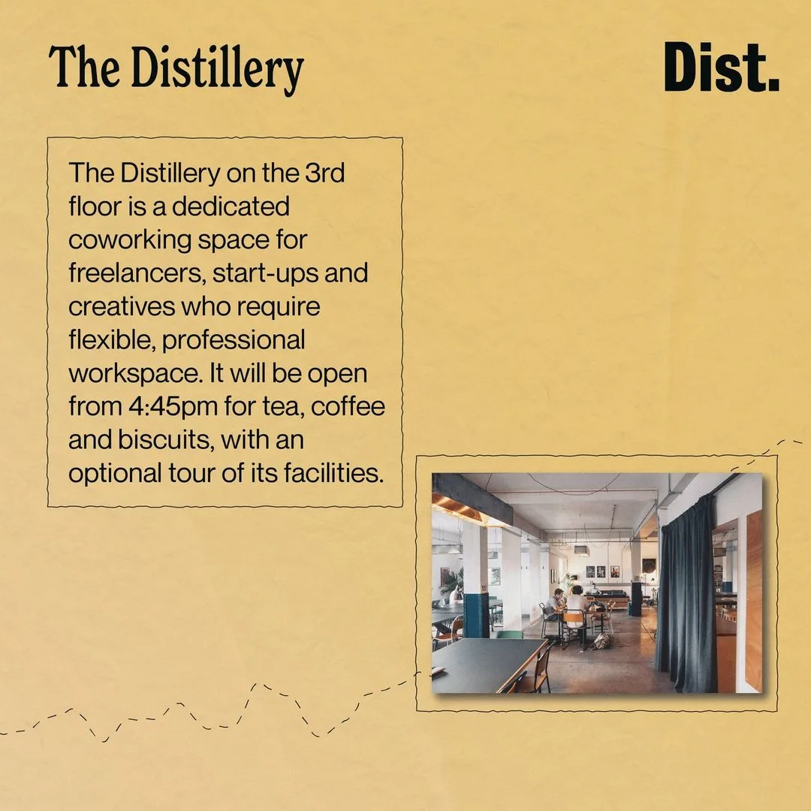
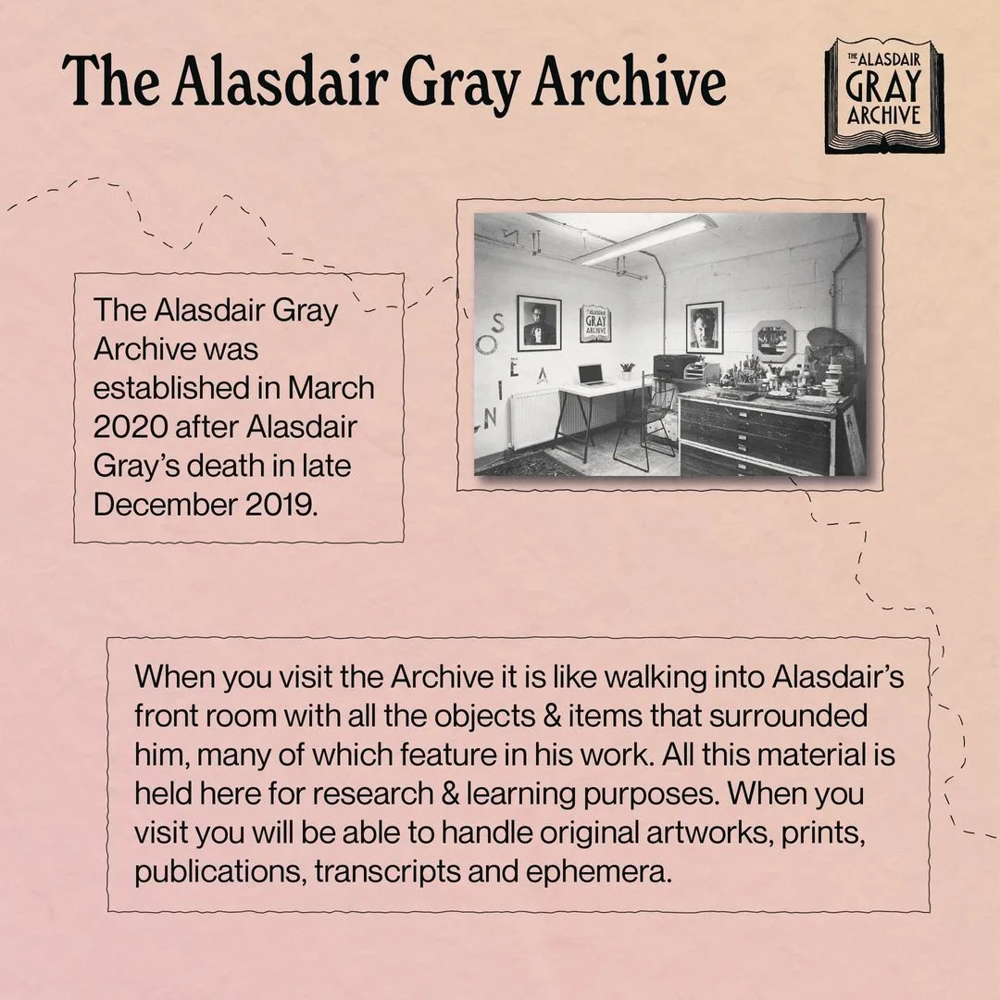

Photography · Content Creation
Wednesday Wanders



About the project
Wednesday Wanders was a guided tour taking visitors through The Alasdair Gray Archive, The Glasgow School of Art Archives & Collections, and Glasgow Sculpture Studios, all based at The Whisky Bond in Glasgow.
I handled photography on the day, edited the images, and produced the social media assets and event posters used to promote each edition across Instagram and beyond.